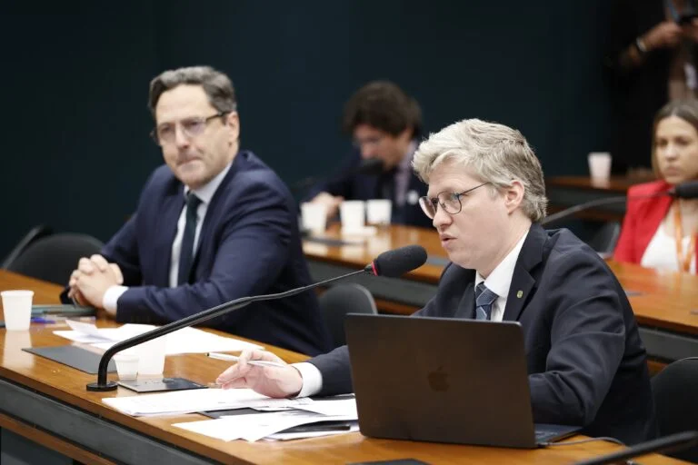
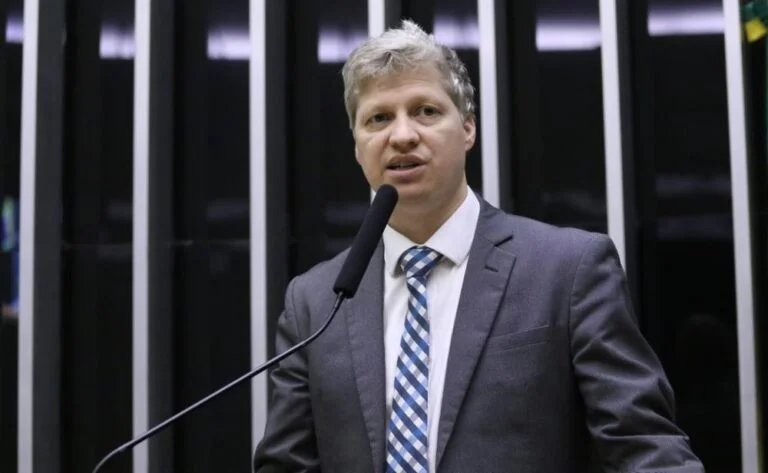

☰
inicio
noticias
Midias
biografia
IGP-RS recebe R$ 400 mil em equipamentos por indicação do deputado Marcel van Hattem.
Leia mais sobre a manifestação:
“Quem quer um Brasil melhor está na rua”,
afirma Marcel em manifestação em Porto Alegre.
Confira a defesa de Van Hattem:
Van Hattem se defende de perseguição e NOVO
representa contra Lindbergh no Conselho de Ética.

Veja a fala sobre o governo Biden:
“Quem deu o golpe foi o PT com a ajuda do
governo Biden”, afirma Marcel van Hattem
após audiência com Mike Benz.

Detalhes da Comissão de Segurança Pública:
Marcel van Hattem quer ouvir jornalistas e ex-assessor de Moraes na
Comissão de Segurança Pública sobre a Vaza Toga.
Veja a reação sobre Bolsonaro e STF:
Marcel van Hattem repudia prisão domiciliar de Bolsonaro
e cobra impeachment de ministros do STF.